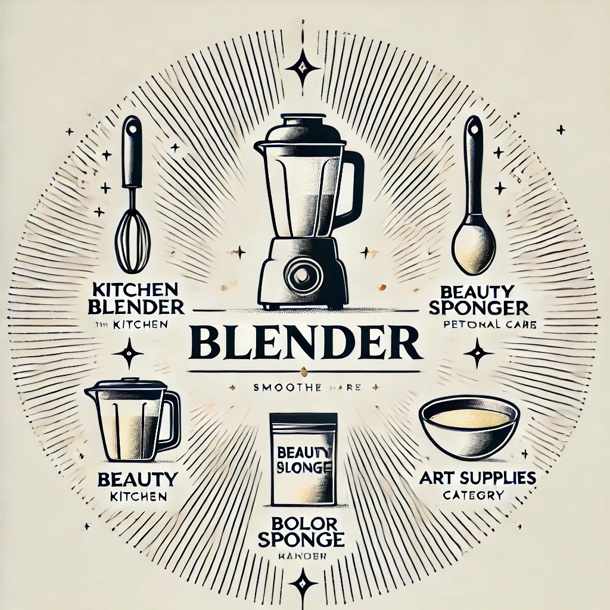

Check out some of my professional and creative projects below! 🎨
-
Restaurant Recommender System with Sentiment Analysis
A network-based restaurant recommendation system that uses sentiment analysis on user reviews and restaurant preferences of similar users to offer personalized, location-based suggestions.
-
Decoding Music Trends with Machine Learning
An analysis focuses on identifying music trends, popular genres, and key characteristics of Spotify's top 25% ranking songs to predict the ranking of new tracks
-

E-commerce Product Classification using NLP and Machine Learning
Amazon's vast catalog often causes confusion when similar product names yield different items. This paper leverages NLP and machine learning to improve product classification, enhancing search accuracy and user experience